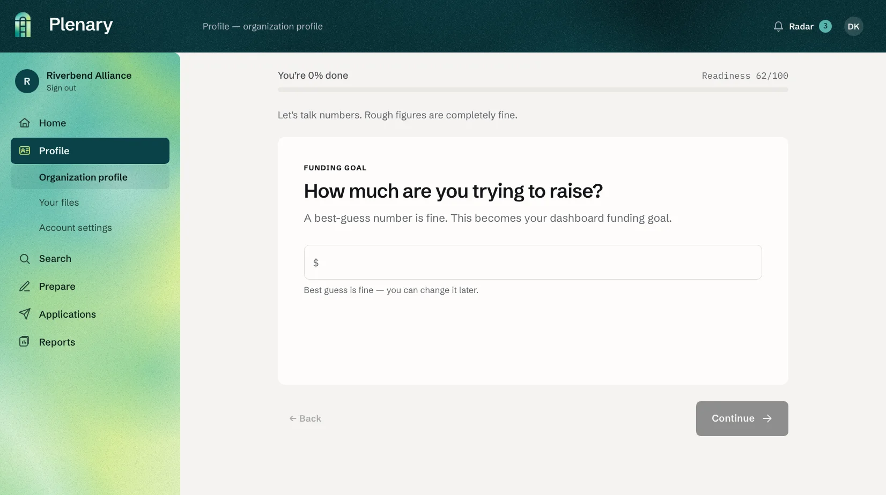
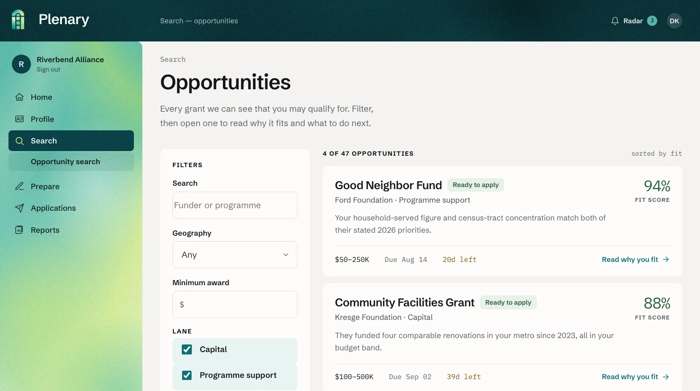
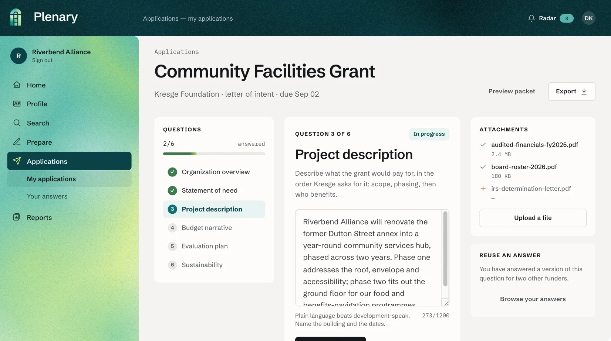
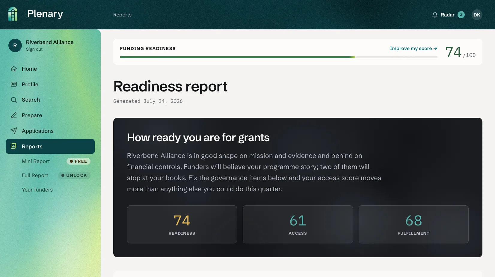

Free. No credit card to start.
The problem
Deadlines, portals, letters of intent, attachments in the wrong format. Applying assumes a full-time grants office most organizations will never have.
Without a map of who funds work like yours, every hour of writing feels like a gamble. Many first applications are never started at all.
Many grants go unawarded every year — not for lack of good work, but for lack of capacity to apply. Capacity should not decide who gets funded.
The plan
Each stage hands its work to the next — and every outcome makes the next grant easier.

A guided intake builds the organization's living profile — story, numbers, voice.
→ Living profile

Funders ranked and scored against the profile across 12 funding lanes.
→ Ranked matches

The agent drafts every answer in the organization's voice. You review and submit.
→ Submitted application

Awards and post-grant reports tracked. Every outcome sharpens the profile.
→ Stronger profile
Why Plenary
We know what a first application costs in nights and weekends — so the software does the heavy part, and nothing is submitted without your sign-off.
CEO · Product & people
A decade of global nonprofit leadership, including the joint fundraising committee of a $30M+ nonprofit.
CTO · Agents & code
Leading-edge agentic development — sales leadership, workflow automation, and data-driven decision-making.
Source: Cerulli Associates, U.S. High-Net-Worth Markets (2024).
Why now
Much of it will move through family foundations and donor-advised funds that award by application. It will go to the organizations ready to apply — and pass over the ones that never hear about it.
Pricing
What you get
Stories
Plenary is built by people who have led and funded nonprofits for a combined 40 years — and we would rather show you nothing than show you something untrue. So this space is empty for now. Our first organizations are going through the process today, and their real stories — names, numbers and all — will live here.
Want to be one of them? Start with a free Mini Report.